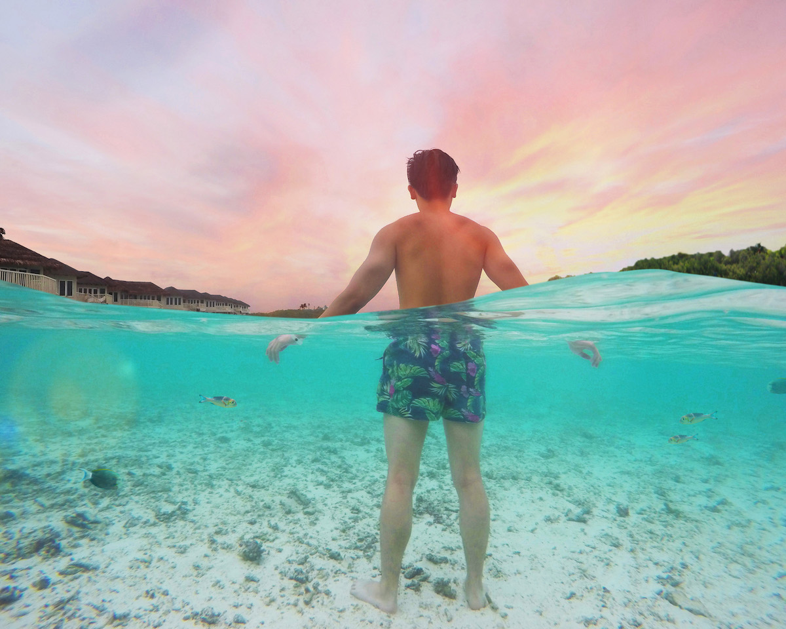
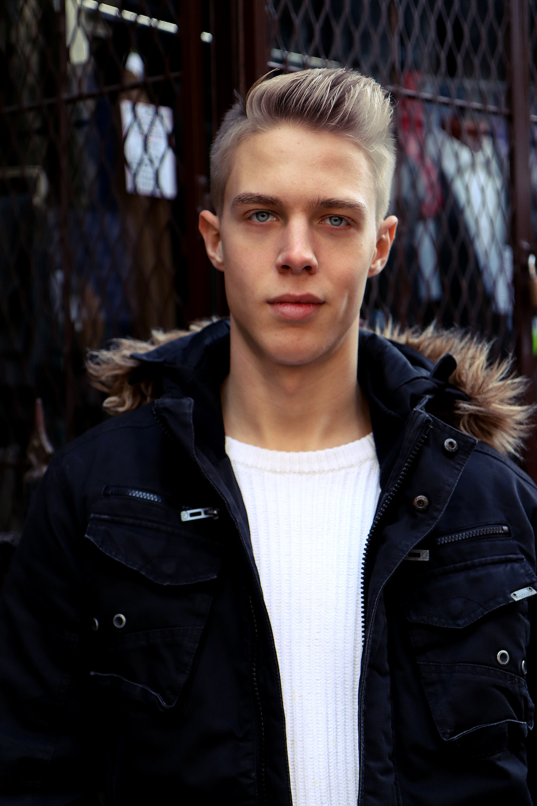
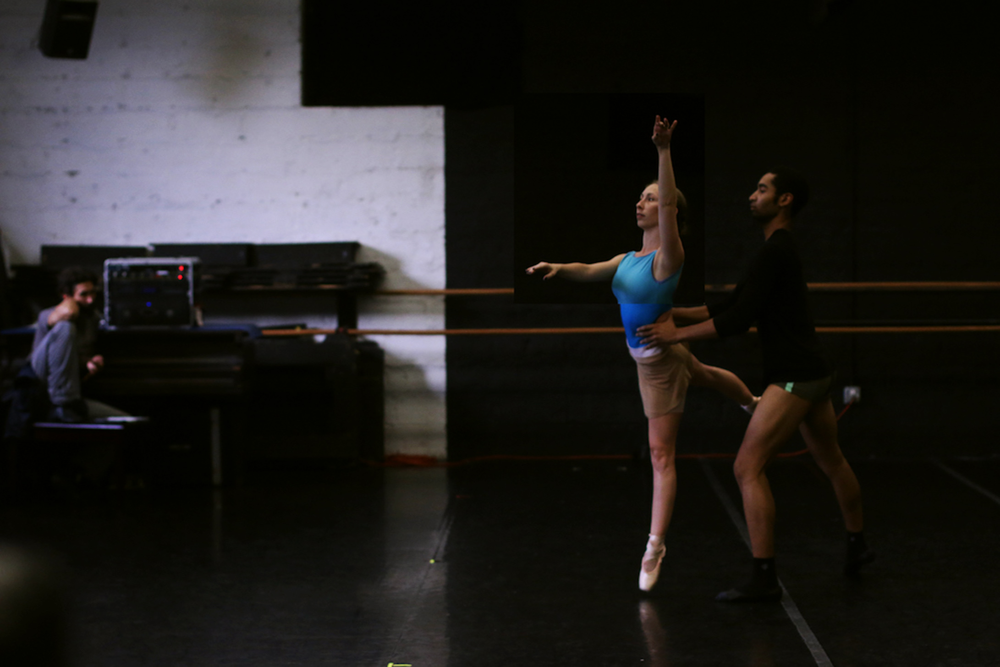
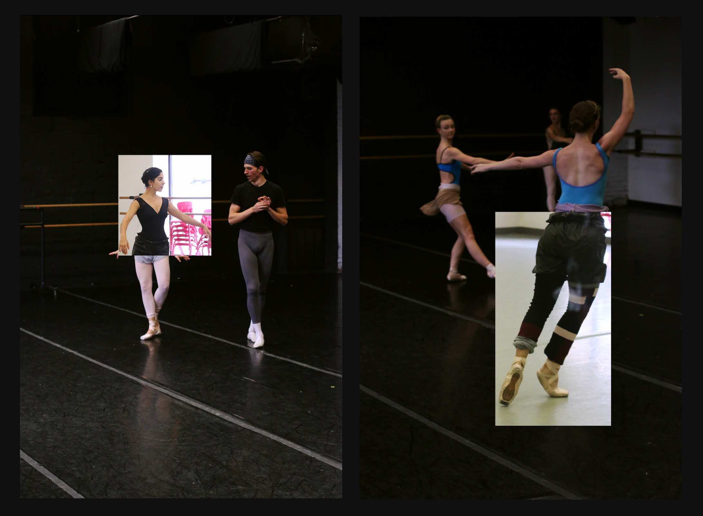

These are selected photography work that I have shot over the last year. This collection contains a wide range of photography styles that I'm interested in including portraiture, editorial, and surrealism. I'm looking forward to shoot and expand my knowledge on product and experimental photography in the future.
Before I was a designer, I was a painter! I used to paint a lot of surrealistic paintings, thus, requiring me to manipulate photos through Photoshop to use as references. My first year getting familiar with Photoshop was through surrealism photography. To this day, this photographic style still has a big impact on how I approach design: the quest to find that subtle yet effective accent in order to keep the viewers linger.
Departing away from studio photography, I occasionally enjoy having the sun as my natural light source! Since there's more flexibility when shooting outdoors, I experimented with more dynamic angels, as well as color grading the photographs based on the tone I want to convey.
 When I first started Instagram, I used to post a lot of unsaturated photographs as a personal style. Over the years, it started to develop into a stylistic approach for my Instagram. While my design work is rich with colors, it is also very refreshing to have the absence of colors in my photographic work! Feel free to check out my Instagram here!
Rhythm was a personal project visualizing the pattern and cadence in movement that ballet dancers have. The photographs were taken of the Festival Ballet group in Providence, Rhode Island. These photographs are then collage together so that they blend in seamlessly, while highlighting the similarity in movement and flow of the dancers.
 